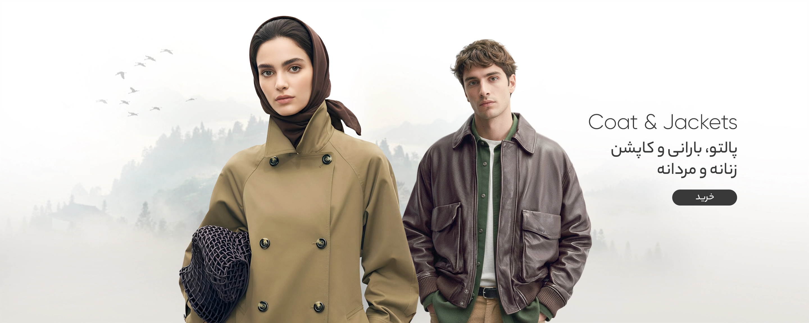
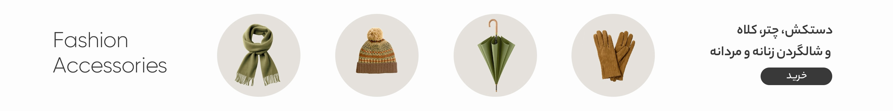
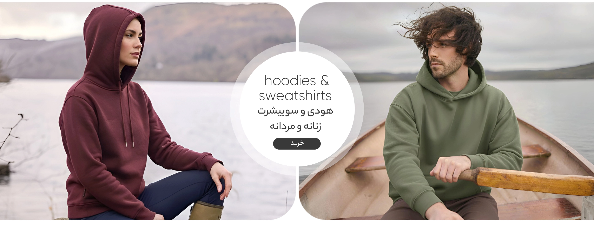
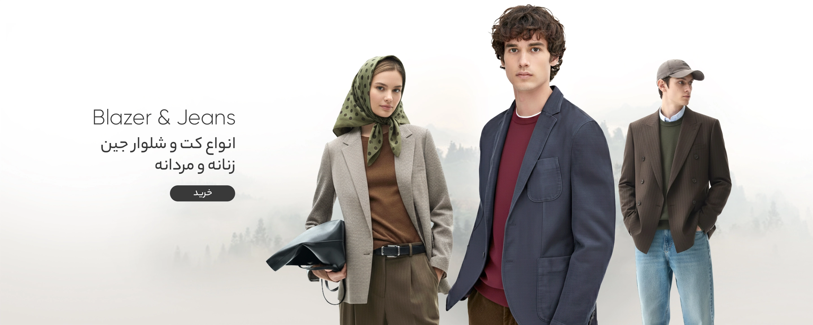
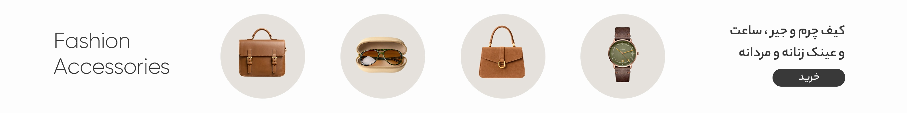
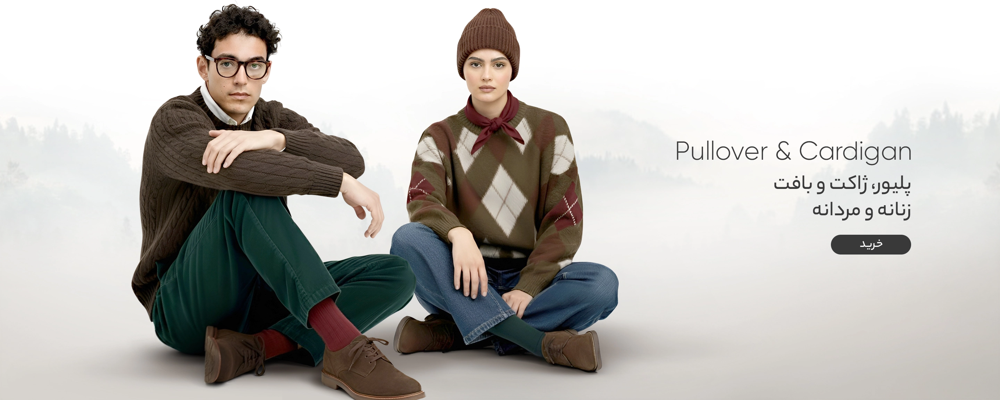
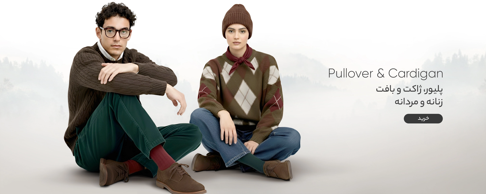
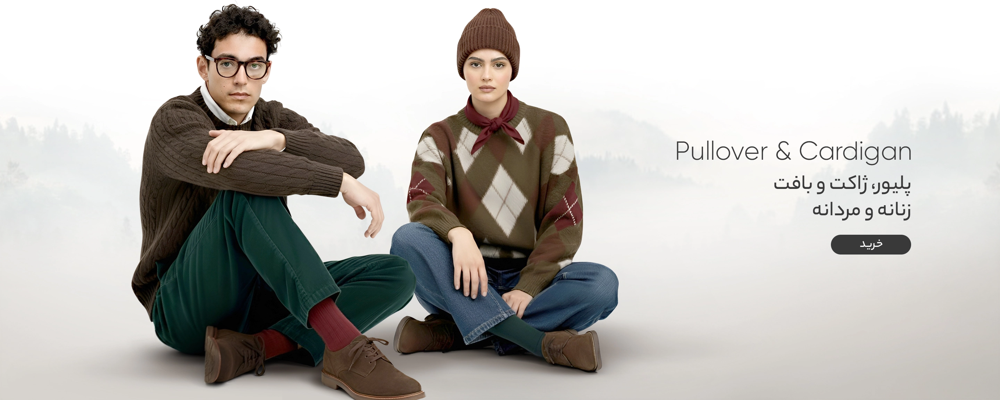

ورود
ثبت نام
ورود
ثبت نام
شهر خود را انتخاب کنید





 


خرید لباس زنانه، مردانه و بچگانه در طرحهای متنوع
انتخاب و خرید لباس بازتابی از شخصیت، سلیقه و سبک زندگی شما است. انتخاب لباس مناسب میتواند اعتمادبهنفس شما را افزایش دهد، راحتی روزانه را تضمین کند و حتی در نگاه اول، تصویری ماندگار از شما بر جای بگذارد. بعضی از لباسها به صورت پوشاک تابستانه هستند و بعضی دیگر مانند مدلهای سویشرت مردانه یا زنانه، برای روزهای سرد سال ارائه شدهاند.
از خرید لباس مجلسی گرفته تا لباسهای راحتی و خانگی، هر بخش از این دنیای متنوع لباسها، نقش ویژهای در زندگی روزمره دارند. در کنار لباسها، اکسسوریهای مختلف مانند کیف، کمربند، عینک و... هم تکمیلکننده استایل هستند. برای خرید لباس و پوشاک هم باید به سراغ یک فروشگاه آنلاین لباس یا فروشگاههای حضوری بروید که خرید آنلاین، روش آسانتری است. خرید لباس از دیجی کالا را هم میتوان از بهترین و امنترین روشهای خرید لباس معرفی کرد.
مانتوهای شیک و متنوع برای هر فصل
مانتو بخش جدانشدنی از استایل و پوشاک خانمهای ایرانی است و خرید مانتو با توجه به تغییر فصلها انجام میشود. مثلا مانتو و لباس نخی برای تابستان مناسب است و مدلهای ضخیم و پشمی، برای زمستان مورد استفاده قرار میگیرند. گزینههای سبکتر مانند مانتوهای کتان یا جین هم برای بهار و پاییز، کاربرد دارند.
علاوه بر جنس، تنوع رنگ و طرح نیز اهمیت ویژهای در انتخاب یک مانتو شیک دارد و از مانتوهای ساده و مینیمال گرفته تا مدلهای طرحدار و مدرن، استایل شما را متنوع و زیبا میکنند. همچنین در انتخاب مانتو و پالتو زنانه باید به مدل لباس و هماهنگی آن با اندام خود نیز دقت داشته باشید تا خوش استایل و زیباتر دیده شوید.
شلوار جین زنانه با انواع مدلهای محبوب
شلوار جین زنانه از آن دسته پوشاکی است که هرگز از مد نمیافتد و در مدلهای متنوعی ارائه میشود. شلوارهای اسکینی برای استایلهای رسمیتر، جینهای مام فیت برای راحتی روزمره و مدلهای دمپاگشاد برای علاقهمندان به استایلهای خاصتر، تنها بخشی از تنوع شلوارهای جین زنانه هستند. نکته مهم در انتخاب شلوار جین، توجه به فرم بدن و انتخاب مدلی است که راحتی و زیبایی را همزمان فراهم کند. همچنین برای ست کردن شلوار، باید به دیگر بخشهای استایل خود مانند مانتو یا شومیز هم دقت کنید و درباره خرید کفش زنانه و ست کردن آن با شلوار هم حساس باشید.
بلوز و شومیز رسمی و راحتی
انواع بلوز و شومیز گزینههایی چندمنظوره برای خانمها هستند. مثلا شومیزهای رسمی را میتوانید با شلوار پارچهای در محیطهای کاری بپوشید یا بلوزهای راحتی را برای دورهمیهای دوستانه انتخاب کنید. بعضی مدلها نیز به صورت لباس دخترانه مجلسی هستند که معمولا همراه با دامن استایل میشوند.
جنس پارچه و دوخت این بلوز و شومیزها نیز اهمیت زیادی دارد که پارچههای نخی برای تابستان و نمونههای ضخیمتر یا مخملی برای زمستان، مناسبتر هستند. حال اگر به دنبال خرید شومیز باکیفیت هستید، باید به سراغ پارچههای خوب و برندهای معتبر بروید تا شومیز، ماندگاری بیشتری داشته باشد و پس از استفاده و شستشو، حالت اولیه خود را از دست ندهد.
استایل مردانه باکیفیت با لباس های متنوع
انواع لباس مردانه بسیار متنوع هستند و از تیشرت و پیراهنهای روزمره گرفته تا کتوشلوارهای رسمی یا شلوار کتان را شامل میشوند. کیفیت پارچه، دوخت تمیز و تناسب سایز، سه ویژگی مهم برای خرید لباس مردانه است که استایل آقایان را حرفهای و جذابتر نشان میدهد. در مجموع آقایان میتوانند با ترکیب لباسهای ساده و کلاسیک با اکسسوریهایی مانند ساعت یا کمربند، ظاهر خود را کاملتر کنند.
لباس رسمی مانند پیراهن و کتوشلوار
برای موقعیتهای رسمی و جلسات کاری، انتخاب پیراهن رسمی مناسب همراه با ست کت مردانه و شلوار اهمیت زیادی دارد. در این میان، رنگهای کلاسیک مانند مشکی، خاکستری و سرمهای همیشه محبوب هستند؛ در حالی که مدلهای پیراهن سفید یا آبی روشن، ظاهری حرفهای و در عین حال ساده به وجود میآورند.
انتخاب یک ست لباس رسمی مردانه یا همان کت و شلوار با برش درست میتواند اندام آقایان را متناسبتر نشان دهد و اعتمادبهنفس را بالاتر میبرد. پس از ست کردن پیراهن با کت و شلوار هم باید به سراغ خرید کفش مردانه بروید و یک کفش زیبا، باکیفیت و متناسب با استایل و دیگر لباسهای خود را انتخاب کنید.
پوشاک راحتی و خانگی با قیمت مناسب
لباس راحتی بخش جداییناپذیر زندگی روزمره در خانه است و البته مدل لباس راحتی زنانه با لباسهای مردانه تفاوت زیادی دارد. از ستهای تاپ و شلوارک گرفته تا تیشرت زنانه نخی و شلوارهای نرم، همگی برای ایجاد حس آسایش خانمها در منزل طراحی شدهاند. از سوی دیگر، مدلهای تیشرت مردانه و شلوار یا شلوارکهای راحتی را هم میتوان از لباسهای راحتی آقایان معرفی کرد. حال اگر برای خرید تی شرت مردانه یا دیگر لباسهای راحتی مردانه و زنانه، گشتی در فروشگاههای آنلاین یا حضوری بزنید، با رنگها و طرحهای متنوعی روبهرو میشوید که اغلب آنها، قیمتهای معمولی و اقتصادی دارند.
سویشرت، هودی و پولوشرتهای شیک
این دسته از انواع لباس مردانه و زنانه مناسب استایل کژوال و روزمره هستند که گاهی به عنوان پوشاک ورزشی هم مورد استفاده قرار میگیرند. سویشرت اسپرت و هودی مردانه یا زنانه با طراحی گرم و راحت، برای فصلهای سرد کاربرد دارند؛ اما پولوشرتهای یقهدار، بین استایل رسمی و اسپرت تعادل ایجاد میکنند و گرمتر از هودی زنانه یا مردانه خواهند بود.
شما نیز برای خرید لباس زمستانه از این مدلها، باید میزان سردی هوا و شرایط را در نظر بگیرید. در هر حال هر سه این پوشاک یعنی هودی مردانه و زنانه، سویشرت و پولوشرتها، در طرحهای ساده و گرافیکی متنوع تولید شدهاند که از محبوبترین انواع لباس زنانه و مردانه هستند و بسته به سلیقه و موقعیت میتوانند استایل خاصی به شما بدهند.
لباس هایی با طرحهای جذاب دخترانه و پسرانه
برای جوانان و نوجوانان، لباسهایی با طرحهای چاپی، نوشتههای انگیزشی یا تصاویر کارتونی جذابیت زیادی دارند. این طرحها نه تنها استایل شخصی را برجسته میکنند، بلکه حس شادابی و انرژی مثبت را نیز انتقال میدهند.
انتخاب رنگهای روشن و طرحهای مدرن نیز در این دسته از پوشاک رایجتر است. علاوه بر طرح و مدل، جنس پارچه این لباسها هم با توجه به فصل و شرایط آبوهوایی انتخاب میشود و مثلا لباس پسرانه تابستانی از پارچههای خنکتر است. در کنار این لباسها هم میتوانید از اکسسوریهای مختلف مانند کیف زنانه یا کمربندهای پسرانه با طرحهای جوانپسندتر استفاده کنید.
پوشاک بچگانه شاد و باکیفیت
لباس بچه گانه باید علاوه بر زیبایی، راحتی و کیفیت بالایی هم داشته باشد. طراحیهای شاد و رنگارنگ به کودکان انرژی و نشاط میدهد و آنها را به پوشیدن لباس علاقهمند میکند. جنس پارچه لباس راحتی بچگانه نیز باید نرم و با قابلیت شستشوی مکرر باشد تا در برابر بازی و تحرک کودکان دوام بیاورد. همچنین برای کودکان انتخاب رنگ لباس هم اهمیت زیادی دارد و با به سراغ رنگهای شاد و جذابتر بروید.
راحتی و ایمنی برای کودکان با پوشاک مناسب
پوشاک کودک باید ایمن باشد و استفاده از جزئیاتی مانند دکمههای ریز یا زیپهای تیز در دوخت لباس بچگانه ممنوع است. لباسهای نخی یا پنبهای انتخابی عالی برای پوست حساس کودکان هستند و به عنوان لباس ضد حساسیت شناخته میشوند. علاوه بر این، انعطافپذیری لباس مانند انواع تاپ بچگانه هم اهمیت دارد تا کودک در هنگام بازی یا تحرک احساس راحتی بکند.
لباس نوزادی با جنس لطیف و ضد حساسیت
تولید لباس نوزادی نیازمند رعایت استانداردهای خاصی است. پارچههای صد درصد پنبه یا پارچههای ارگانیک بهترین گزینه برای جلوگیری از حساسیت پوستی و دوخت لباسهایی مانند سرهمی نوزاد به حساب میآیند. طراحی ساده و بدون دوختهای زبر یا تگهای آزاردهنده هم راحتی بیشتری را برای نوزاد به همراه دارد. همچنین کیفیت پارچه لباسهای نوزادی هم بسیار مهم است؛ چراکه این لباسها بارها شستشو داده میشوند و باید مقاومت بالایی داشته باشند تا تغییر رنگ و حالت ندهند.
برندهای محبوب و معروف خرید لباس
برندها نقش مهمی در کیفیت و ماندگاری پوشاک دارند و انتخاب برندهای پوشاک معروف میتواند کیفیت لباس را تا حدودی موثری تضمین کند. برند اسمارا (Esmara) به دلیل طراحیهای ساده و کاربردی در بخش پوشاک روزمره شناخته میشود. برند سرژه (Serge) نیز با ارائه لباسهای زنانه و مردانه مدرن، توجه بسیاری از خانمها و آقایان را به خود جلب کرده است. همچنین برند ایرانی چرم مشهد با تولید محصولات چرمی باکیفیت، جایگاه ویژهای در بازار برای خرید لباس و پوشاک دارد. برندهای دیگری مانند دفکتو (Defacto)، ال سی وایکیکی (LC Waikiki) و زارا (Zara) نیز در میان خریداران لباس زنانه و مردانه بسیار محبوب هستند.
بررسی قیمت انواع لباس و پوشاک
قیمت پوشاک به عوامل مختلفی بستگی دارد که از جمله این عوامل میتوان به جنس پارچه، کیفیت دوخت، طرح لباس و برند تولیدکننده اشاره کرد. بر همین اساس، بالاترین قیمت به لباس مجلسی و به ویژه لباس عروس اختصاص دارد. از سوی دیگر برای خرید جوراب دخترانه و لباسهای خانگی هزینه کمتری را پرداخت میکنید. برای یافتن قیمت مناسب لباس هم باید به سراغ فروشگاههای معتبر و رسمی مانند دیجی کالا بروید.
خرید لباس از دیجی کالا
دیجیکالا یک فروشگاه آنلاین خرید لباس است که سالها تجربه موفق در فروش پوشاک مختلف دارد. همچنین از دیجی کالا میتوانید خرید ساعت و دیگر اکسسوریها را نیز انجام دهید. در واقع اگر به دنبال جدیدترین مدل لباس و خرید لباس آنلاین هستید، دیجی کالا میتواند از بهترین انتخابهای شما باشد. تمامی لباسها در این فروشگاه از برندهای معتبر و با تضمین اصالت و کیفیت کالا به فروش میرسند.
شما میتوانید پیش از خرید، اطلاعات عمومی برای صفحه پوشاک و هر لباس را بررسی کنید و بهترین انتخاب را داشته باشید. از دیگر مزایا خرید تاپ زنانه و دیگر لباسها از دیجی کالا هم میتوان به قیمتهای مناسب، تخفیفهای فوقالعاده، ارسال سریع سفارشها و امکان مرجوعی کالای خریداری شده اشاره کرد. همچنین کارشناسان بخش پشتیبانی این فروشگاه اینترنتی پوشاک به صورت تمام وقت (۲۴ ساعته در ۷ روز هفته) در خدمت شما هستند تا بدون مشکل و ابهام، خرید خود را انجام دهید.
حراج لباس
دیجی کالا همیشه در فروش انواع پوشاک با تخفیفات ویژه، تجربهای متفاوت از خرید آنلاین را برای کاربران خود رقم میزند. حراج لباس در طول سال و همچنین برگزاری جشنوارههای بزرگ مانند بلک فرایدی، فرصت مناسبی برای خرید با قیمتهای بسیار مناسب هستند. تخفیف لباس در دیجی کالا برای همه دستهبندیهای پوشاک در نظر گرفته شده است.
شما در حراج لباس بلک فرایدی میتوانید انواع پوشاک از برندهای معتبر را با تخفیفهای ویژه تهیه کنید. این جشنوارهها معمولا شامل تخفیفهای درصدی جذاب هستند که باعث کاهش چشمگیر قیمت لباسها میشوند و امکان خریدی اقتصادی را فراهم میکنند. نکته مهم این است که دیجی کالا علاوه بر بلک فرایدی، تخفیف لباس را به صورت همیشگی نیز دارد.
برای استفاده از بیشتر تخفیفها، کافی است در بخش جستجو و فیلترهای سایت، گزینههای مربوط به حراج لباس یا تخفیفها را فعال کنید. با استفاده از فیلترها میتوانید محصولات را بر اساس درصد تخفیف، قیمت، برند و نوع لباس مرتب کنید تا خرید بهینه و سریعتری انجام شود. برای مثال، فیلتر «بیشترین تخفیف» را انتخاب کنید تا محصولات با کمترین قیمت از بالای صفحه برای شما لیست شوند.
با توجه به بلک فرایدی لباس و جشنوارههای همیشگی دیجی کالا، خرید آنلاین هرگز به این اندازه لذتبخش و اقتصادی نبوده است. فقط باید برنامهریزی کنید و با استفاده از فیلترها، بهترین محصولات را به موقع وارد سبد خرید خود کنید.

ﺿﻤﺎﻧﺖ اﺻﻞ ﺑﻮدن ﮐﺎﻟﺎ

دانلود اپلیکشن دیجی کالا